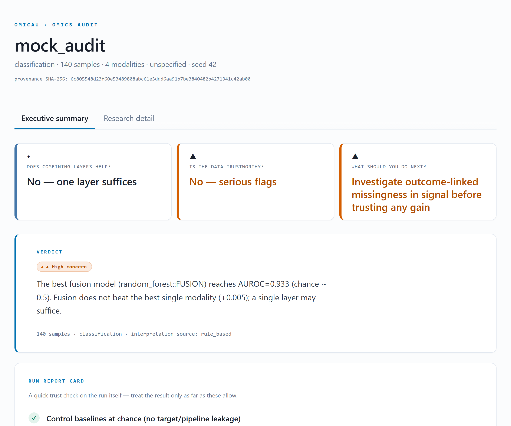
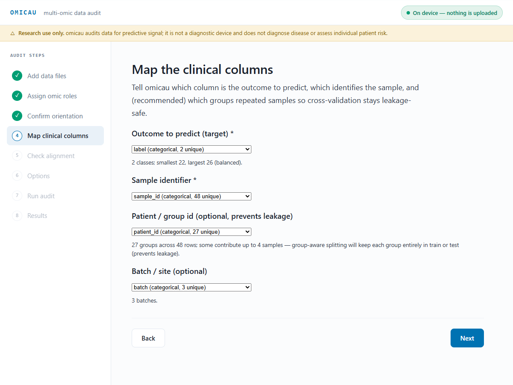
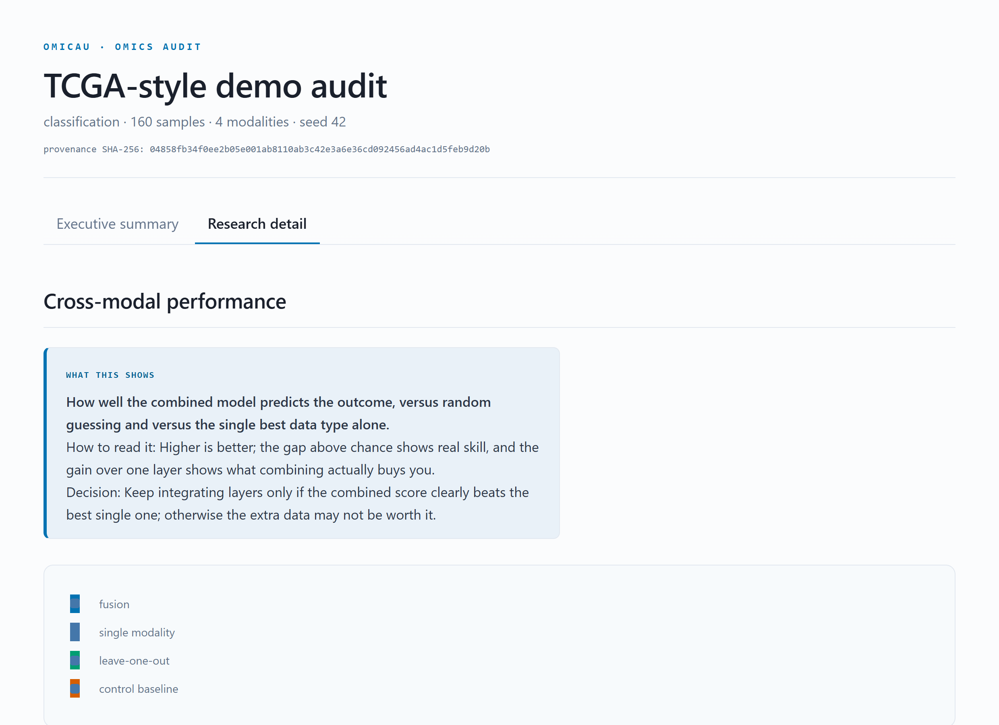

Not a statistician? Start here
The one figure to read
Open report.html and read the executive summary tab first — nothing else. It has three parts, top to bottom:
- The answer strip — three questions, one plain answer each: Does combining layers help? · Is the data trustworthy? · What should you do next?
- The verdict — one paragraph naming the best model, its score, and whether combining actually beat using one data type alone.
- The run report card — a pass / caution / fail checklist telling you how far to trust the run before you trust any number in it.
If the report card shows a fail, stop and read why — a number sitting above a failed check is not a result. Every term on the page has an ⓘ you can hover for a plain definition.
What this does not tell you
Ready for more? Reading the report walks through every panel; Is my result trustworthy? is the full trust checklist.
Leakage-safe multi-omics audit and fusion benchmarking
omicau ingests one numeric matrix per omic layer plus a clinical endpoint, then audits the data and benchmarks how well those layers combine to predict the endpoint. It emits a self-contained interactive HTML dashboard alongside machine-readable JSON and CSV, and runs fully offline.

What omicau answers
Before anyone builds a model on a multi-omic dataset, omicau answers three questions about the data itself:
- Does combining omic layers actually help, or does one layer already carry the signal?
- Is the apparent signal trustworthy, or an artifact of batch effects, outcome-linked missing data, or information leakage in the cross-validation?
- What should you do next — adopt the fusion model, prefer a single layer, distrust a confounded layer, or re-check the splits?
It makes no patient predictions and issues no diagnosis. Under leakage-safe, group-aware cross-validation it benchmarks classical and neural fusion with group-level bootstrap 95% confidence intervals, tests each layer's marginal contribution with a corrected resampled t-test, measures cross-layer redundancy, benchmarks negative controls to prove the pipeline does not leak, and locks provenance with a value-level SHA-256 hash.
Installation
pip install . # core, fully offline
pip install ".[ui]" # + optional local no-code web UI
pip install ".[data]" # + remote data hubs
pip install ".[llm]" # + optional LLM interpretation plugin
pip install ".[all,dev]" # everything + testsPython ≥ 3.10. Core dependencies: numpy, pandas, scipy, scikit-learn, torch, plotly, click, jinja2, tqdm.
Quick start
omicau check-env # CPU/GPU + dependency status
omicau bootstrap --dataset mock --out-dir demo # write a synthetic dataset + config
omicau run --config demo/config.json --cores 8 # full audit -> demo/run/report.html
omicau verify --config demo/config.json # recompute the provenance hashOpen demo/run/report.html for the dashboard. demo/run/audit.json is the full machine-readable state; model_metrics.csv, modality_ledger.csv, and missingness_tests.csv are flat exports; MODEL_CARD.md is a research-use-only model card.
The mock dataset is offline and the recommended starting template — it writes a runnable config.json and example CSVs with deliberately redundant, batch-confounded, and pure-noise layers, so the diagnostics have something to flag. Add --task regression for a regression mock.
Bring your own data
NA) for missing. You do not need to normalize, scale, or impute first — omicau aligns the files and does all scaling inside cross-validation so nothing leaks.Provide one file per modality, one clinical table, and a small config that names them (paths resolve relative to the config). Ingestion is forgiving: delimiter and orientation are auto-detected (samples × features or features × samples), sample names are fuzzily matched across files, and common NA tokens, European decimals, and ±inf are healed. Missing values stay masked — never imputed at ingest.
| Omics layer | Value type | Feature id | Note |
|---|---|---|---|
| RNA-seq / expression | log2 TPM/FPKM/CPM (prefer log) | gene / Ensembl / Entrez | log-transform heavy-tailed counts first |
| Proteomics | normalized abundance (log2) | UniProt / gene | missing is MNAR-informative; do not impute |
| DNA methylation | beta [0,1] or M-values | probe (cg…) / gene | one convention per matrix |
| Metabolomics | peak area / concentration (often log) | RefMet / HMDB / name | below-detection stays blank |
| Copy number | log2 ratio or GISTIC −2…2 | gene | one convention per matrix |
| miRNA | log-normalized expression | miRBase (hsa-miR-…) | same shape as RNA-seq |
| Somatic mutation | binary 0/1 or count | gene | near-constant columns dropped |
The clinical table is one row per sample: a sample-id column, the target, and optional group (e.g. patient id, for leakage-safe splitting) and batch columns. A single modality is allowed — cross-modality comparisons are simply skipped. The feature-id examples above are human, but any organism's identifiers work unchanged — see Model & non-model organisms.
{
"run_name": "my_study", "output_dir": "run",
"modalities": [
{"name": "rna", "path": "rna.csv"},
{"name": "protein", "path": "protein.csv"}
],
"clinical": {"path": "clinical.csv", "target": "outcome",
"sample_id": "sample_id", "group": "patient_id",
"batch": "batch", "task": "auto"},
"cv": {"n_splits": 5, "seed": 42, "n_bootstrap": 1000}
}Model & non-model organisms
samples × features matrix and a column saying what each sample is, omicau runs on it unchanged.Feature IDs are yours to name
Feature identifiers are treated as opaque strings — Zm00001d027230, FBgn0000490, AT1G01010, an OTU id, a peak m/z, or a de-novo transcript name all work identically to a human gene symbol. Nothing is mapped, matched to a reference, or validated against a species. Only sample names are matched across your files (to line the tables up); feature names are carried through verbatim.
Sample-name normalization is off by default
WT_rep3, Mouse-12, KO-3, Col0-rep1, Sample-01A, or at1g01010 all pass through unchanged and match across your files exactly as written.TCGA-AB-2802-03A-... → TCGA-AB-2802), opt into the TCGA preset — it uppercases and trims the aliquot suffix:
"normalization": {"preset": "tcga"}tcga data hub sets this automatically; you only need it for hand-built configs on raw barcodes.Grouping and batch: the pseudoreplication guard
The most important columns for animal and plant work are group and batch in the clinical table. They stop the same thing that patient-id grouping stops in a clinical cohort: samples that aren't independent leaking optimistic scores.
group— the unit that must never be split across training and testing. Set it to whatever your replicates share: the animal id when you have several tissues or timepoints per animal, or the litter / cage / plant / plot when that is the unit you actually randomized. omicau keeps every sample from one group entirely in train or entirely in test.batch— the nuisance structure to watch for: sequencing run, extraction day, plate, growth chamber. omicau flags a data type only when its variance tracks the batch and the batch tracks the outcome.
Cage can be either: use it as group if you treated whole cages, as batch if cages are just where animals were housed.
| Setting | group = | batch = | Typical target |
|---|---|---|---|
| Mouse, tissues per animal | animal id | sequencing run | genotype / treatment |
| Mouse, cage-randomized | cage / litter | processing day | diet / exposure |
| Zebrafish clutch | clutch | plate / run | morphant vs. control |
| Yeast strains | strain / colony | growth batch | condition / phenotype |
| Arabidopsis | plant / accession | growth chamber | ecotype / stress |
| Crop field trial | plot | field block / harvest day | yield class / line |
| Livestock | animal id | farm / batch | breed / trait |
A minimal mouse config differs from the human one only in the column names it points at:
{
"run_name": "mouse_liver", "output_dir": "run",
"organism": "Mus musculus",
"modalities": [
{"name": "rna", "path": "rna.csv"},
{"name": "protein", "path": "protein.csv"}
],
"clinical": {"path": "clinical.csv", "target": "genotype",
"sample_id": "sample", "group": "animal_id",
"batch": "seq_run", "task": "classification"},
"cv": {"n_splits": 5, "seed": 42, "n_bootstrap": 1000}
}To try a real non-human dataset in one command, use the cross-organism data hub: omicau bootstrap --dataset expression_atlas --out-dir d (defaults to a mouse experiment from EMBL-EBI Expression Atlas).
The optional no-code UI
omicau is a CLI tool first. For non-coders there is an opt-in local web UI — a wizard to upload files, map columns, and run the audit without a config file:
pip install ".[ui]"
omicau ui # opens a browser wizard on 127.0.0.1It binds 127.0.0.1 behind a one-time token, opens a browser, and walks through: drop files → confirm the auto-guessed omic role and orientation → map the clinical columns (each dropdown shows its live consequence, e.g. class balance or the leakage implication of the grouping) → check cross-file alignment → run the identical pipeline → read the report in-page.

Reading the report
The dashboard has two tabs, both driven by the same audit.json. Executive summary answers the three questions in plain language and states a verdict and a trust checklist — read this first. Research detail holds the numbers behind those answers.
The answer strip
Three questions, one answer each: Does combining layers help? · Is the data trustworthy? · What should you do next? Under it, the clinical verdict is one plain paragraph naming the best fusion model, its headline score, whether fusion beat the best single layer, which layers carry independent signal, and which to treat with caution.
The run report card
A short pass / caution / fail checklist telling you how far to trust the run itself, before you trust any score in it:
- ✓ pass Control baselines at chance — a shuffled target is not predictable, so no leakage.
- △ caution Batch confounding / missingness — a layer whose batch is confounded with the outcome, or missingness linked to the outcome.
- ▲ fail Leakage flagged — a control beat chance; investigate the splits before trusting any score.

Is my result trustworthy?
Read the result only as far as these allow:
| Check | Trust when | Discount when |
|---|---|---|
| Control baselines | all near chance (no leakage flag) | a control is significantly above chance |
| Confidence interval | the 95% CI is narrow and clears chance | the CI is wide or overlaps chance |
| Calibration | the reliability curve tracks the diagonal | large Brier/ECE — probabilities ≠ risks |
| Batch confounding | no layer flagged batch-confounded | a layer is confounded with the outcome |
| Subgroups | a small gap across sites/subgroups | a wide gap — the global metric hides it |
How it works
The whole pipeline is designed to not fool you. Preprocessing (median-impute → variance-filter → standardize → feature selection) is fitted inside each training fold only; cross-validation is group-aware (multiple samples from one patient never split across train and test).
Fusion across the integration axis
omicau benchmarks three integration regimes so you can see which a dataset wants:
- Early — feature concatenation, per estimator (logistic/ridge, random forest, gradient boosting).
- Intermediate — a masked global-pooling neural network that ignores missing features per sample (no artificial variance injected).
- Late — stacking: a meta-learner cross-validated over the single-modality out-of-fold predictions (leakage-safe by construction).
Each layer's marginal gain — how much it adds beyond the others — is tested with the Nadeau–Bengio corrected resampled t-test (k-fold train sets overlap, so a naive paired t-test has inflated Type-I error). Cross-layer redundancy is the linear CKA; a layer highly aligned with a stronger one is flagged redundant.
Uncertainty & calibration
- Confidence intervals — every model's primary metric carries a group-level bootstrap 95% CI (resampling whole patient groups). The per-fold spread is shown only as "fold dispersion," since correlated folds bias it low — often several-fold narrower than the true CI.
- Calibration (binary classification) — a reliability curve, Brier score, and ECE, flagging that
class_weight="balanced"miscalibrates probabilities by construction. - Feature attribution — leakage-safe permutation importance on held-out folds, reported as mean ±SD across folds. It is unconditional and biased under feature collinearity (Hooker 2021; Strobl 2008), so the ranking is indicative, not causal.
Data hygiene & generalization
- Missingness bias — Kruskal-Wallis / Spearman / chi-square tests (BH-corrected) for missingness associated with the outcome (possible MNAR).
- Batch & confounding — PCA silhouette + ANOVA η² for batch structure, plus a chi-square/Cramér's V (categorical) or ANOVA/η² (continuous) test for batch–outcome confounding. A layer is called batch-confounded only when its variance is batch-structured and batch is confounded with the outcome (an orthogonal batch effect is harmless).
- Control baselines — shuffled-target / shuffled-feature / random-noise runs; the leakage alarm fires when a control's CI lower bound clears chance.
- Subgroup performance — the best model re-scored within each site/subgroup, with the max-minus-min gap surfaced.
- Cross-site stress test (opt-in) — folds blocked on batch (leave-one-batch-out) for an honest new-batch estimate + optimism gap.
Reproducibility & provenance
audit.json and re-checkable with omicau verify (exit 1 on any drift). A DOME methods block and a MODEL_CARD.md are emitted for governance.omicau verify --config config.json --expected <hash> # exit 1 on mismatch
omicau verify --config config.json --audit run/audit.jsonData hubs
Optional clients pull public cohorts (verified live). The primary workflow remains your own data.
| Client | Source | Modalities → target |
|---|---|---|
tcga | cBioPortal (no auth) | mRNA + copy-number + clinical |
ccle | DepMap 24Q4 (figshare) | expression → CRISPR dependency |
xena | UCSC Xena | multi-omics + phenotype |
openpbta | public S3 | fusion matrix + histologies |
metabolomics | Metabolomics Workbench | metabolites + study factors |
omicau bootstrap --dataset xena --out-dir d --preset brca --target PAM50Call_RNAseqCLI & configuration
| Command | Purpose |
|---|---|
omicau check-env | report CPU/GPU + dependency status |
omicau bootstrap --dataset … --out-dir … | assemble a dataset + runnable config |
omicau run --config … [--cores N] [--deterministic] | run the full audit → dashboard + assets |
omicau verify --config … [--expected H] [--audit …] | recompute / check the provenance hash |
omicau ui | launch the optional local web UI |
Key config knobs: cv.n_splits, cv.n_bootstrap, cv.batch_blocked, compute.deterministic, neural.enabled, llm.enabled. Configs may be JSON, TOML, or YAML.
Research use only
omicau · github.com/tunabirgun/omicau · part of the Build with Claude: Life Sciences hackathon (Anthropic × Gladstone Institutes).